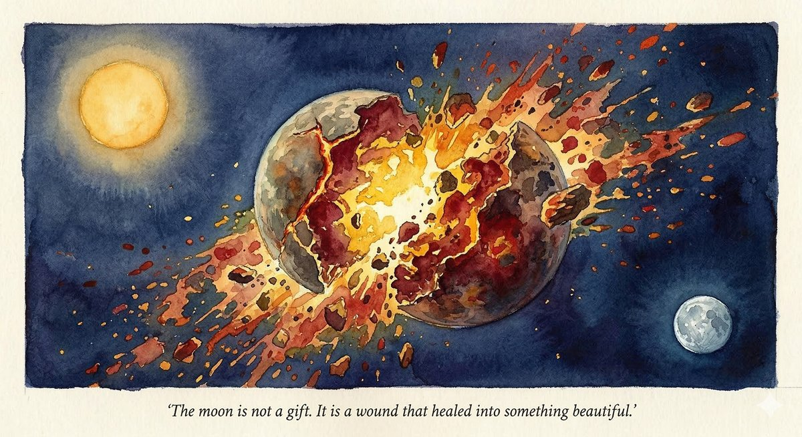
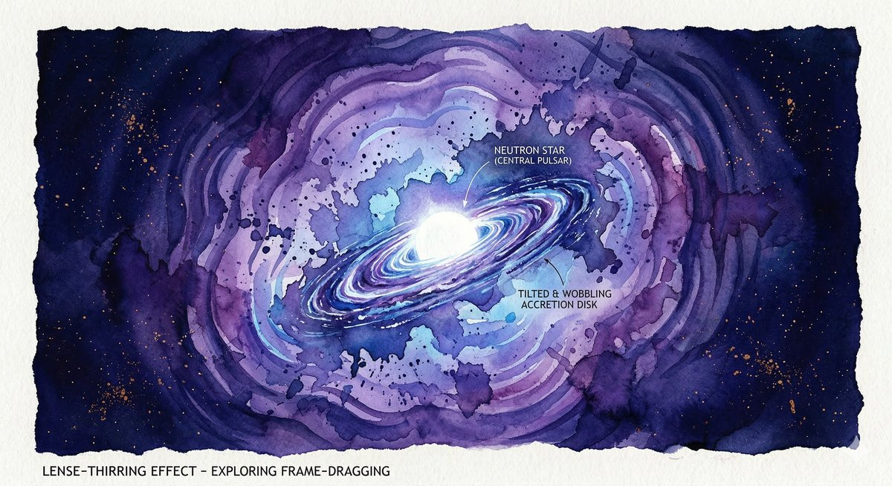
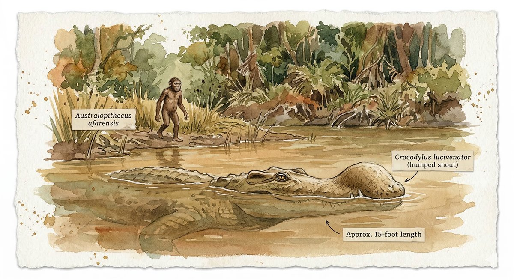
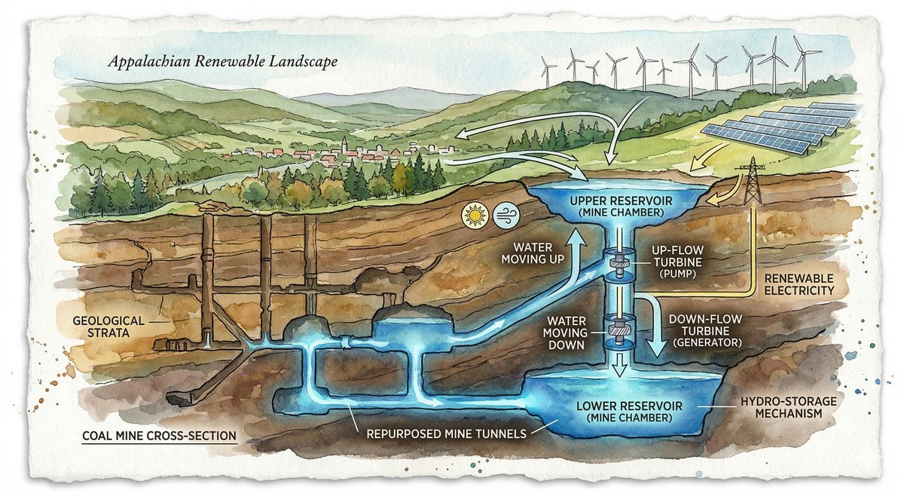

There is a temptation, when we speak of the cosmos, to reach for the language of serenity — the silent majesty of the stars, the deep stillness of space, the clockwork elegance of orbital mechanics. It is a comforting vocabulary. It is also, as this week's science news makes clear, almost entirely wrong. The universe is not serene. It is violent, drunken, and ceaselessly inventive, and the stories that emerged from the world's observatories and fossil beds and abandoned mine shafts over the past several days describe a cosmos — and a planet — in a permanent state of becoming. Nothing is settled. Everything is mid-collision.
In the span of a single week, astronomers announced that they had detected a twelve-billion-year-old comet soaked in alcohol, drifting through our solar system like a message in a bottle from the infant galaxy. Other astronomers reported watching two planets smash into each other in real time — a cataclysm that may mirror the ancient impact that gave Earth its moon. A team tracking a supernova discovered that the explosion had given birth to a magnetar, one of the most extreme objects in the known universe, and that general relativity itself was required to explain its strange, chirping light. Paleontologists named a fifteen-foot crocodile that hunted our ancestors three million years ago. And engineers at Oak Ridge National Laboratory published plans to transform half a million abandoned coal mines into underground water batteries.
The stories have nothing in common — except that they all describe transformation through violence. Comets flung between stars. Worlds smashing into worlds. Stars dying so spectacularly that they drag the fabric of space-time itself into a wobble. Crocodiles ambushing the small, upright apes who would eventually name them. And human beings, repurposing the scars they've left in the earth into something that might, just possibly, help.
I. The Drunken Messenger

The comet arrived from somewhere else entirely.
3I/ATLAS — the "3I" designating it as only the third confirmed interstellar object ever detected passing through our solar system — was first spotted in July 2025 by the ATLAS survey in South Africa. Its trajectory was wrong. Unlike every comet born in the Oort Cloud or the Kuiper Belt, 3I/ATLAS was moving too fast and at the wrong angle to have originated here. It was a visitor, an emissary from another star system, possibly from the deep interstellar medium itself.
What made it extraordinary was not just its origin but its chemistry. Observations by the ALMA radio telescope array in Chile revealed that the comet was bursting with methanol — not trace amounts, but concentrations that exceeded those of nearly every known comet in our own solar system. The methanol-to-hydrogen-cyanide ratios were measured at seventy and a hundred and twenty, numbers that placed 3I/ATLAS in a chemical category almost entirely its own. Subsequent observations by the James Webb Space Telescope found it was also unusually rich in carbon dioxide, with traces of water ice, carbon monoxide, carbonyl sulfide, and methane.
If this estimate holds, 3I/ATLAS is more than twice as old as our sun, more than twice as old as the Earth, a frozen relic from an era when the Milky Way was still assembling itself from gas and dust and the earliest stars were just beginning to die.
The implications are quietly staggering. The rich organic chemistry preserved in the comet's ices — the methanol, the carbon compounds, the volatile molecules that are precursors to the chemistry of life — suggests that prebiotic chemistry may have been occurring in star-forming regions far earlier than anyone had assumed. The building blocks of biology may have been scattered across the galaxy before the Earth existed. Before our sun existed. Before most of the stars we can see existed.
There is something moving about the image of this ancient, alcohol-laden snowball drifting through our neighborhood for a few months before sailing back into the void. It is the ultimate message in a bottle — except that the bottle is twelve billion years old, the message is written in methanol and carbon dioxide, and nobody sent it on purpose. It simply wandered here, as things do, across an unimaginable distance and an unimaginable span of time, carrying in its ice a record of conditions that prevailed when the galaxy was young.
And then it left.
II. When Worlds Collide

Eleven thousand light-years away, in a star system catalogued with the unpoetic designation Gaia20ehk, something terrible and beautiful happened.
The star itself was unremarkable — a stable, main-sequence star not unlike our sun, with a steady and predictable light output that had been dutifully recorded by the European Space Agency's Gaia satellite. But starting around 2016, the light began to behave oddly. Three short dips in brightness appeared, the kind of dimming that might indicate a planet transiting the star's face or a passing cloud of dust. The dips were curious but not alarming.
Then, around 2021, the star — in the words of lead researcher Eric Gaidos of the University of Hawai'i — "went completely bonkers."
The brightness fluctuations became wild and irregular, the light curve a jagged mess that defied every standard explanation. The research team, drawing on data from multiple telescopes and surveys, gradually assembled the picture: two planets orbiting Gaia20ehk had collided. Not grazed each other, not exchanged gravitational pleasantries, but slammed together in a cataclysm that vaporized rock, produced a vast debris cloud, and scattered material across the inner reaches of the star system.
The parallels are striking. At that distance, the material could eventually cool, coalesce, and solidify into something resembling an Earth-moon system. The researchers are, in effect, watching a version of our own cosmic origin story unfold in another star system, frame by frame, in a time-lapse that compresses geological epochs into a few years of telescope data.
It is easy to forget that the moon — that serene, silver presence in our night sky, the thing that governs tides and inspires poetry and serves as a shorthand for tranquility — was born in an act of staggering violence. A Mars-sized body, sometimes called Theia, struck the proto-Earth at an oblique angle, liquefying both worlds, ejecting a cloud of molten rock into orbit, and leaving behind the scarred, lopsided planet we now call home. The moon is not a gift. It is a wound that healed into something beautiful. And at Gaia20ehk, we may be watching that process begin again.
III. The Chirping Star

If the collision at Gaia20ehk represents creation through destruction, the supernova designated SN 2024afav represents something even more extreme: the birth of an object so dense, so magnetized, and so rapidly spinning that the very fabric of space-time bends around it like water around a stone.
SN 2024afav was first detected in December 2024 by the ATLAS survey — the same network that would later spot the interstellar comet — and was quickly identified as a superluminous supernova, an explosion at least ten times brighter than an ordinary supernova, visible from a billion light-years away. The Las Cumbres Observatory, a global network of robotic telescopes, tracked the explosion for more than two hundred days.
What the astronomers saw was, at first, what they expected. The brightness peaked about fifty days after the initial detection, then began to fade. But instead of dimming smoothly, the light curve began to oscillate — rising and falling in a series of four distinct bumps, each one arriving more quickly than the last. The pattern resembled nothing so much as a chirp.
The team, led by Kaustav Kashyap Das and Wynn Jacobson-Galán at UC Berkeley, recognized what they were seeing. The chirp was the signature of a newborn magnetar — a neutron star with a magnetic field roughly three hundred trillion times stronger than Earth's, spinning on its axis once every 4.2 milliseconds. Material ejected by the supernova had fallen back toward the magnetar, forming an accretion disk. But the disk was misaligned with the magnetar's spin axis, and because general relativity dictates that a spinning mass drags space-time along with it — an effect called Lense-Thirring precession — the disk began to wobble. As the disk contracted and fell inward, the wobble accelerated, producing the chirps in the light curve.
The discovery also resolved a decades-old debate. Superluminous supernovae — those impossibly bright explosions that outshine entire galaxies — had been theorized to be powered by magnetars, but the evidence had remained circumstantial. SN 2024afav provided the first unambiguous confirmation. The magnetar model was no longer a hypothesis. It was an observation.
A star died. Space-time wobbled. And in the wobble, physicists heard a sound that confirmed what they had suspected for twenty years.
IV. Lucy's Hunter

Three million years ago, in what is now the Afar region of Ethiopia, a small hominin walked upright through a landscape of rivers and gallery forests. She stood about three and a half feet tall, weighed perhaps sixty-five pounds, and belonged to the species Australopithecus afarensis. When her fossilized skeleton was discovered in 1974 by Donald Johanson and Tom Gray, she was given the name Lucy, after the Beatles song playing at the camp that evening, and she became the most famous individual in the entire human fossil record.
This week, paleontologists named the creature that almost certainly hunted her.
Crocodylus lucivenator — Lucy's hunter — was a twelve-to-fifteen-foot crocodilian with a distinctive humped snout, weighing between six hundred and thirteen hundred pounds. An Iowa-led research team described the species in the Journal of Systematic Palaeontology, based on analysis of a hundred and twenty-one catalogued remains — skulls, teeth, jaw fragments — representing dozens of individuals excavated from the Hadar site, the same fossil beds that yielded Lucy herself.
The researchers were unequivocal: C. lucivenator was the largest predator in that ecosystem, larger and more dangerous than the lions, hyenas, or saber-toothed cats that shared the landscape. It was an ambush predator, lurking submerged in the rivers and waterways that Lucy's species would have needed to visit daily.
There is a particular vertigo that comes from contemplating this image. We are accustomed to thinking of early hominins as protagonists — as the scrappy, clever ancestors who would eventually invent fire and language and orbital telescopes. But in the Pliocene landscape of Afar, they were prey. Small, slow, poorly armed, forced to approach the water's edge knowing that something enormous and patient might be waiting just beneath the surface.
The naming of C. lucivenator is, among other things, a correction to the narrative we tell about ourselves. The crocodile has been extinct for millions of years. Lucy's descendants are reading about it on their phones. But the crocodile was there first. And for a very long time, the smart money would have been on the crocodile.
V. The Mines Remember

If the first four stories in this dispatch describe the violence of the natural world — comets flung across galaxies, planets smashed to rubble, stars dying in convulsions that warp space-time, crocodiles lurking in Pliocene rivers — the fifth describes a different kind of violence, and a different kind of transformation. It is the story of what human beings did to the earth, and what they might, improbably, do with the scars.
There are more than five hundred thousand abandoned coal mines in the United States. They are scattered across Appalachia, the Midwest, the Mountain West — hollowed-out chambers and shafts bored into the rock over two centuries of extraction, then left behind when the coal ran out or the economics shifted. Many are environmental hazards, leaching acid mine drainage into waterways, collapsing into sinkholes, releasing methane. They are, in the most literal sense, wounds in the earth.
This week, researchers at Oak Ridge National Laboratory published a study describing how these wounds might be repurposed. The concept is elegant in its simplicity: pumped-storage hydropower. During periods of excess electricity generation — when the sun is shining on solar panels or the wind is turning turbines — water is pumped into the upper chambers of the mine. When electricity is needed, the water is released downward through turbines, generating power on demand. The mine, in effect, becomes a giant underground battery.
Traditional pumped-storage hydropower requires specific geography — mountains with reservoirs at different elevations. The ORNL breakthrough lies in moving the operation underground, using the existing vertical architecture of mine shafts as the elevation differential. This opens the technology to flatter regions — precisely the regions, in many cases, where coal mining was most prevalent and where the economic devastation of the coal industry's decline has been most acute.
The engineering challenges are real. The chemically active environment inside abandoned mines — the acidic water, the unstable rock, the potential for methane accumulation — requires sophisticated hydrodynamic and chemical modeling. But the promise is equally real: a technology that simultaneously addresses energy storage, environmental remediation, and economic revitalization in communities that have been hollowed out by the same industry that created the mines in the first place.
There is something almost too neat about the symbolism — coal mines, the engines of the carbon economy, reborn as the infrastructure of the renewable one. But the neatness is not a reason to dismiss it. Sometimes the scars really do become the foundation for something new.
Coda: The Permanent State of Becoming
The five stories gathered here span twelve billion years and eleven thousand light-years. They include a comet older than the sun, a planetary collision that mirrors the birth of our moon, a supernova that required Einstein's equations to explain, a crocodile that stalked our ancestors, and a plan to turn the wounds of industrialization into batteries for the future.
What connects them is not a thesis but a rhythm. The universe is not a finished thing. It is not a clock, ticking with mechanical precision toward some predetermined state. It is a process — violent, creative, wasteful, astonishing — in which destruction and creation are not opposites but partners. The comet carries the chemistry of life through the void, but only because some ancient star exploded and scattered its elements across space. The moon exists because the Earth was nearly destroyed. The magnetar was born in the death of a star. Our species survived because we were just clever enough to avoid the crocodile. And the mines — the scars — might yet become the infrastructure of survival.
None of this is comfortable. The language of serenity was always a lie we told ourselves, a way of making the cosmos less terrifying by making it more dignified. But the real universe is not dignified. It is drunk on methanol, smashing planets together, dragging space-time into wobbles, hiding predators in muddy rivers, and leaving half a million holes in the ground for us to figure out what to do with.
The question, as always, is whether we are paying attention.